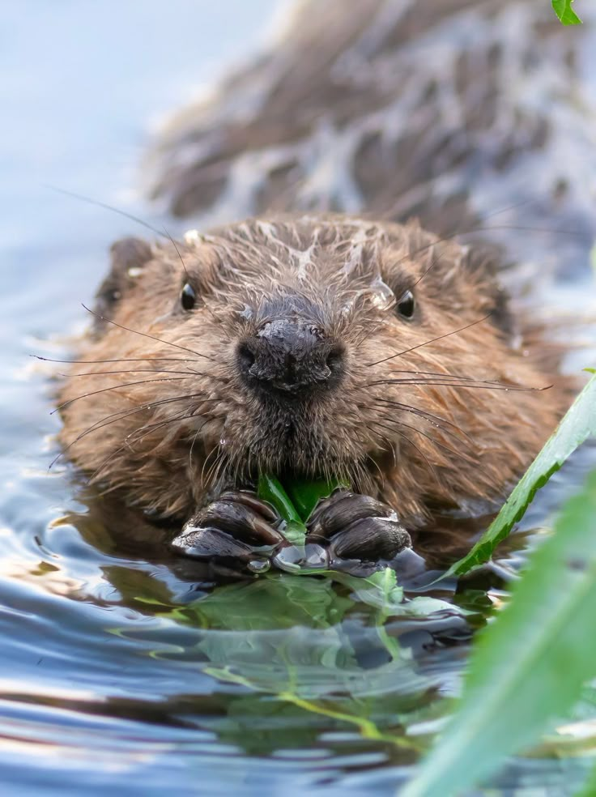

Life of a Beaver
Beavers are amazing animals known for their hard work and creativity. They live near rivers,lakes, and ponds, where they build dams and lodges using branches, mud, and stones. These structures create calm ponds that keep them safe from predators and provide a perfect homefor their families
A beaver’s home, called a lodge, has underwater entrances and a warm, dry living area inside.Their strong front teeth never stop growing, allowing them to cut down trees and gather food.They mostly eat the bark, leaves, and twigs of trees like willow, aspen, and birch.
Beavers live in family groups called colonies. Both sparents care for their young, called kits,and teach them how to swim and build. After about two years, the kits leave to start their own colonies.
Beavers also help nature. Their dams create wetlands that give shelter to fish, birds, and other wildlife. Because they shape the environment and support many other species, beavers are often called “nature’s engineers.”